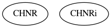

Master index
Index for ./src/PerturbationFluctuation/Perturbation/CHNR
Dependency Graph for ./src/PerturbationFluctuation/Perturbation/CHNR

Generated on Mon 22-Jun-2020 18:44:16 by
m2html
© 2005
 Master index
Master index Master index
Master index